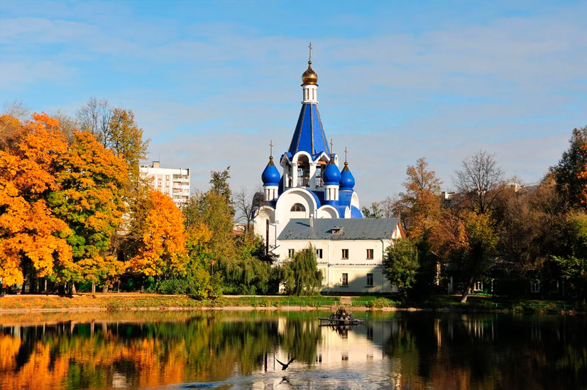

Королёв
Королев называют неофициальной космической столицей России. Это знаменитый наукоград, родина известного конструктора Королева, который создал ракету Восток 1. Теме космоса в этом городе уделяется особое внимание. Главной его достопримечательностью можно назвать Центр управления полетами, где посетители смогут своими глазами увидеть рабочий процесс и узнать много интересного о космической технике и жизни космонавтов на орбите. Так же советую посетить музей Королева, где представлены макеты спутников, пилотируемых аппаратов и баллистических ракет. Для любителей гуманитарных наук в пригороде Королева есть дом Марины Цветаевой, где она жила после эмиграции. В тот момент она тяжело переживала арест мужа и смерть детей, но экскурсоводам удалось показать и положительные стороны этого места. Около дома туристы могут прогуляться по живописному парку с мемориалами, на которых выгравированы стихи поэтессы. Настоящим любителям искусства понравится дом-музей Дурылина, где представлены различные иконы, картины и некоторые вещи известных актеров брльшого театра. В городе есть замечательный Центральный парк имени Калинина и Усадьба Лапино-Спасское, которую можно назвать настоящим памятником деревянного зодчества.
Расстояние от Москвы до Королева – 28 км. Сюда можно приехать на электричке с Ярославского вокзала или на автобусе от станции ВДНХ.
Расстояние от Москвы до Королева – 28 км. Сюда можно приехать на электричке с Ярославского вокзала или на автобусе от станции ВДНХ.
Где перекусить?
• Кафе АндерСон – сетевой ресторан с высокими ценами на маленькие, но вкусные порции. Прекрасный сервис, нежнейшие десерты - все на достойном уровне. Диапазон цен от 1 000 руб до 2 000 руб
• Сладкая Италия – ресторан с Шеф-поваром итальянцем. Быстрое обслуживание. Большие порции. Вкусная еда. Вкусные десерты. По мнению туристов там подают лучшую пиццу в Королеве. Так же советую попробовать фокаччу с розмарином. Единственный минус этого места – высокие цены, так как используются высококачественные продукты.
• Будьмо – ресторан украинской кухни. Место очень популярно, поэтому народу много. Место привлекает своим интерьером украинского хутора и вкусной едой, поэтому иногда найти свободный столик достаточно проблематично. Диапазон цен от 200 руб до 1 500 руб
• Сладкая Италия – ресторан с Шеф-поваром итальянцем. Быстрое обслуживание. Большие порции. Вкусная еда. Вкусные десерты. По мнению туристов там подают лучшую пиццу в Королеве. Так же советую попробовать фокаччу с розмарином. Единственный минус этого места – высокие цены, так как используются высококачественные продукты.
• Будьмо – ресторан украинской кухни. Место очень популярно, поэтому народу много. Место привлекает своим интерьером украинского хутора и вкусной едой, поэтому иногда найти свободный столик достаточно проблематично. Диапазон цен от 200 руб до 1 500 руб
